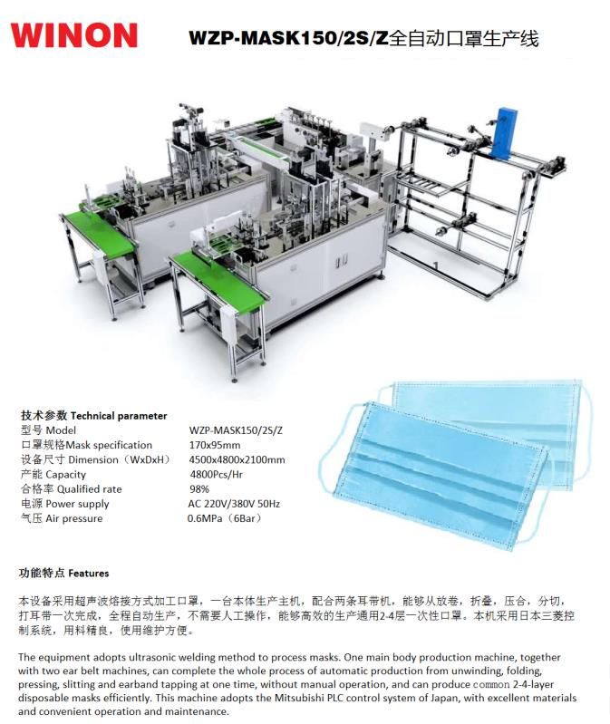

MASK PRODUCTION LINE
Automatic Mask Production Line (WZP-MASK150/2S/Z)
Fully Automatic Flat Mask Production Line
Winon Industrial Co., Ltd. — Dongguan, China
The Winon automatic mask production line (WZP-MASK150/2S/Z) produces flat surgical masks fully automatically. Material feeding, folding, ultrasonic bonding and ear-loop fixing are handled continuously, providing high-speed, consistent output of finished, packable masks.
Technical Parameters
Complete technical specifications are available on request — please contact Printway Marketing & Services.
KEY FEATURES
Technical Features
Fully Automatic
Continuous automatic production from raw material to finished flat surgical masks.
High-Speed Output
Designed for high-speed, round-the-clock production of standard flat masks.
Consistent Quality
Automated folding and ultrasonic bonding deliver uniform, repeatable mask quality.
Interested in the Automatic Mask Production Line (WZP-MASK150/2S/Z)?
Contact Printway Marketing & Services for pricing, product demonstrations, spare parts, consumables, and technical support.
Request a Quote